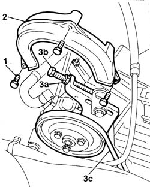
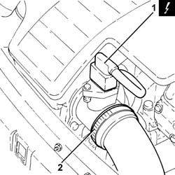
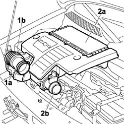
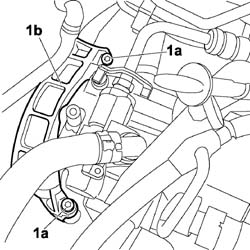
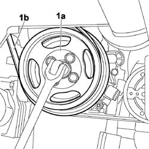
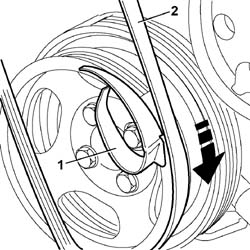

1092C10 power steering and/or self-levelling suspension pump drive belt - r + r
- Path
- Procedures > 10 ENGINE > 1092 ENGINE COMPONENT MISCELLANEOUS DRIVES > 1092C POWER STEERING/SELF-LEVELLING SUSPENSION PUMP DRIVE > 1092C10 power steering and/or self-levelling suspension pump drive belt - r + r
- Kind
- repair procedure (removal / refitting; the operation number is the code)
- Applies to
- all engines; all production periods
- Interactive page
- https://sloeber94.github.io/elrnDB-fDbl/en/#/2584378
Applies to: all engines; all production periods
 Removing
Removing
 Refitting
Refitting7055B54 under-engine guard - r r
1092B50 alternator/air conditioner compressor drive belt - adjust tension
1. Undo the power steering pump belt plastic guard retaining bolts.
2. Remove the power steering pump belt guard.
3. Unscrew nut (3a) and adjustment screw (3b) to slacken belt tension. Then remove belt (3c).

Applies to: all engines; all production periods
Removing
RefittingPosition the car on the ramp.
Disconnect the battery negative terminal.
 | Name | Connector |
|---|---|---|
- | Battery | A1 |
1. Disconnect the electrical connection from the air flow meter.
| Name | Connector |
|---|---|---|
1 | Air flow meter | K41 |
2. Loosen the band and disconnect the the turbocharger air inlet sleeve from the rigid pipe, air flow meter side.

Applies to: all engines; all production periods
Refitting
RemovingCheck belt condition.
Change the belt if necessary.
Fit the new belt on the drive pulleys.
Tighten belt tension by adjusting the nut and adjustment screw.
1092C12 power steering pump drive belt - adjust tension
Fit the power steering belt guard.
1092B50 alternator/air conditioner compressor drive belt - adjust tension
1092B54 alternator/water pump drive belt - adjust tension
Applies to: all engines; all production periods
1. Loosen the band (1a) and disconnect the flexible sleeve (1b) from the air intake.
2. Remove the air filter (2a) complete with air flow meter (2b) by releasing from the underlying pins and then from the rear fastenings.

Applies to: all engines; all production periods
1. Undo bolts (1a) and remove the belt guard (1b).

Applies to: all engines; all production periods
Carry out 4450B04 right front wheel r r /p>
Carry out 7055B54 under-engine guard - r r
1. Use an appropriate tool to rotate the crankshaft pulley (1a) in a clockwise direction and prise up power steering pump drivebelt (1b).

Applies to: all engines; all production periods
Refitting
RemovingInsert the drive belt correctly into its seat on the power steering pump pulley.
1. Apply the fitting tool provided with the belt and position on the crankshaft service pulley as shown in the figure.
2. Fit the drive belt on the pulley. Turn the service pulley clockwise on the crankshaft using a wrench of appropriate size until the belt fits correctly into its seat.

Applies to: all engines; all production periods
Carry out 7055B54 under-engine guard - r r
Carry out 4450B04 right front wheel r r
Place the belt guard in its seating and tighten the bolts.
Fit the air filter complete with air flow meter. Secure to the rear fastenings and then to the underlying pins.
Connect the flexible sleeve to the air intake on the beam and tighten the retaining bands.
Connect the air intake sleeve to the turbocharger, air flow meter side, and tighten the band.
Connect the electrical connection to the air flow meter.
| Name | Connector |
|---|---|---|
- | Air flow meter | K41 |
Connect the battery negative terminal.
| Name | Connector |
|---|---|---|
- | Battery | A1 |
Remove the car from the ramps.
Topics linked from this page (5)
- 1092B50 alternator/air conditioner compressor drive belt - adjust tension
- 1092B54 alternator/water pump drive belt - adjust tension
- 1092C12 power steering pump drive belt - adjust tension
- 4450B04 right front wheel r r
- 7055B54 under-engine guard - r r
Topics that link to this page (28)
- 0010K20 20,000km service coupon, emission control version
- 1008a46 TIMING SIDE POWER UNIT RIGID SUPPORT - R.R.
- 1016B10 single cylinder head extension - change gasket
- 1016C10 cylinder head - r + r and replace gasket
- 1020B30 timing system cover oil seal - replace
- 1032B10 toothed timing belt - r + r for timing adjustment or replacement
- 1032B14 toothed timing belt - r + r for timing adjustment or replacement versions with air conditioner
- 1032B46 toothed drive pulley - r + r
- 1032B60 bolt pulley - r r
- 1032B62 TIMING BELT TOOTHED PULLEY - R.R. FOR VERSIONS WITH AIR CONDITIONING
- 1032A12 CHAIN AND GEARS for timing system - R.R. for timing or Replacement.
- 1032C40 Timing CHAIN TENSIONER PLATE - R.R.
- 1036B10 overhead camshaft - r r on vehicle
- 1036C39 PHASE TRANSFORMER ON INLET CAMSHAFT IN CYLINDER HEAD - R.R.
- 1072C10 exhaust manifold - r + r and replace seal
- 1080D35 Engine oil collection MANIFOLD - R.R.
- 1084B12 engine oil pump - r+r
- 1084B26 emgine oil intake duct - r r
- 1088C10 water pump - r + r
- 1092A10 Crankshaft services PULLEY - R.R.
- 1092C14 power steering pump/self levelling suspension pump pulley - r + r with belt removed
- 1092G10 single engine belt r r
- 4130B20 power steering pump r r
- 4130B30 POWER STEERING PUMP BRACKET OR SUPPORT - R.R.
- 4130B32 POWER STEERING PUMP SUPPORT - R R
- 5040A20 air conditioner compressor - r+r - includes fluid level check and top up if necessary
- 5040A26 compressor mount - r r
- 5530A10 alternator - r+r